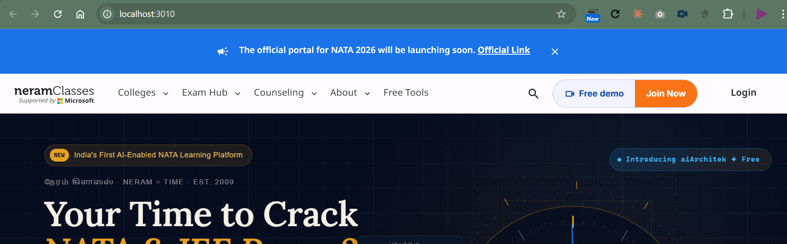

Today the header changes size and colour with each account state: orange Join Now, blue Continue/Track, green Pay and Go to App. The Login button turns into an avatar, and My Enrollment and the bell appear and disappear. The redesign keeps four fixed slots. The primary slot is always one gold button, and the account status is a small dot plus the button's wording.

secondary) appears nowhere else on the site.HeaderCtaPill.tsx).Used on articles, college and counselling detail pages, and legal pages. The slots, labels and gold primary are the same, so only the background changes.
getCtaConfig and ctaTone collapse into one map: status → { label, short, href, dot }. Remove toneSx and the hard-coded greens.HeaderCtaPill splits into two plain buttons. One shape per job reads clearer than a split pill whose halves differ in colour.GOLD_GRADIENT. My Enrollment takes the secondary slot, so the nav never reflows.